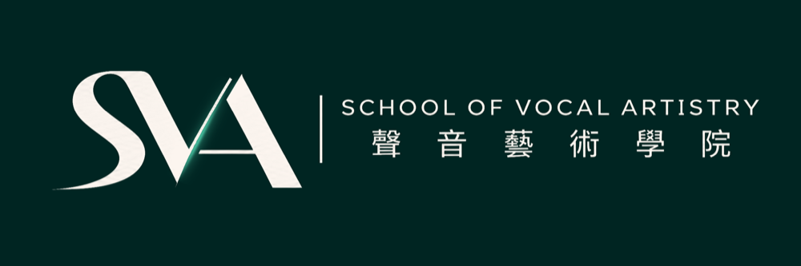
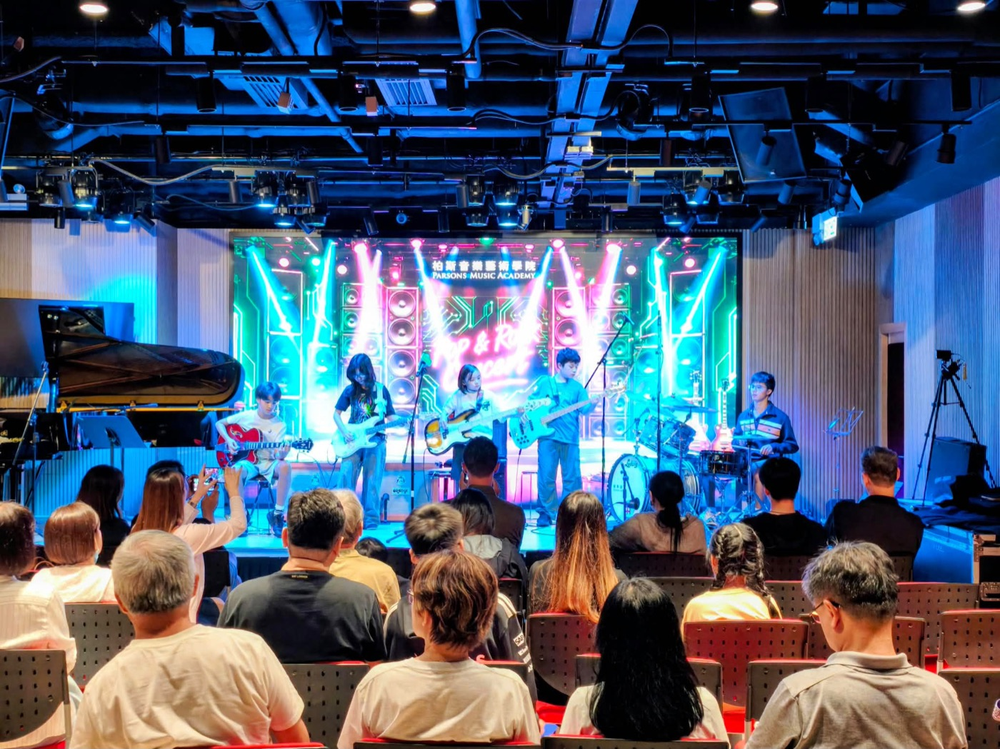
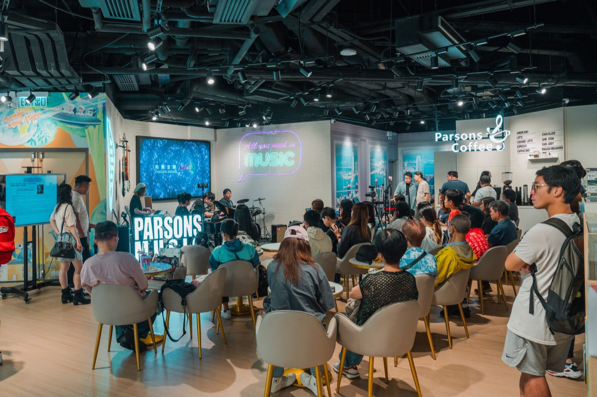
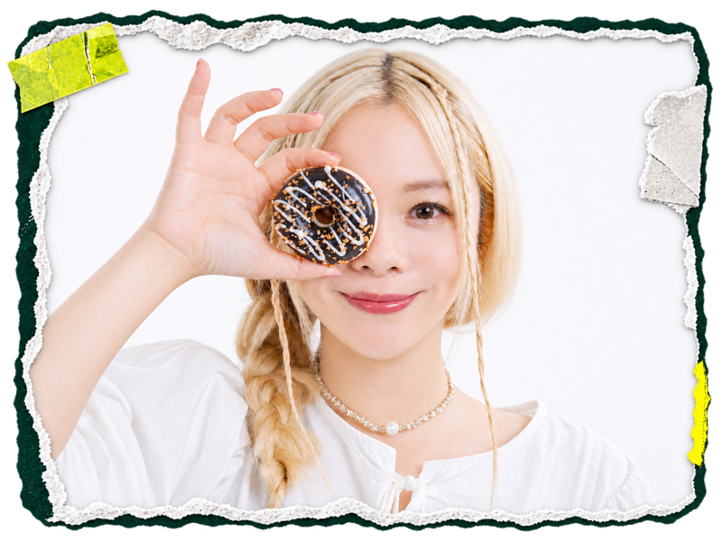

Guddy Chan
歌唱 · 聲樂科學

11–12 DEC 2026 · PARSONS HALL, CAUSEWAY BAY
兩日，參與一首廣東歌的誕生。
查看門票詳情 →LET'S MAKE CANTOPOP
首個廣東歌文化節，邀請音樂創作人及藝人指導為公眾上音樂課。透過兩日音樂公開課、創作環節及 MUSIC LIVE，一起探索旋律、歌詞、演繹與和音，參與原創廣東歌的創作過程。參加者無需專業音樂背景，可選擇心儀的課程出席，或以 2 天創作人 PASS 方式感受一首歌曲的製作。
這是一個十分難得的機會於 2 天內成為一首歌的作曲／作詞人——由旋律創作、填詞、聲樂設計、DEMO 錄製到和音編排，兩日親身參與一首全新廣東歌的誕生！由導師手把手帶你體驗 2 日寫一首歌的 baby step，學習聲樂技巧、即時在音樂會中演繹！
FESTIVAL VENUE · 指定上課地點
位於時代廣場的 Parsons Hall 柏斯音樂廳，擁有專業音響、燈光及舞台設備，並配備齊全樂器及完善的音樂教學設施，為音樂創作、聲樂訓練及現場演出提供理想環境。作為 CANTOPOP FEST 2026 廣東歌文化節指定教學場地，柏斯音樂廳將化身《全民造歌》的創作空間，讓參加者在專業環境下，親身體驗由作曲、填詞、聲樂設計到現場演繹，一首廣東歌的完整誕生過程。


MEET THE MENTORS
從聲音、旋律、歌詞到演繹和和音，與導師一起探索一首廣東歌的誕生。
歌唱 · 聲樂科學
作曲 · 旋律創作
填詞 · 譜上歌詞
DEMO 製作

和音編排
現為商業電台叱咤903DJ，亦為本地填詞人、音樂錄像導演及演唱會創意策劃。出版著作有長篇小說《壽願僧》、散文集《一起一個人》、《日常風物詩》、《想像記憶集合體》、短篇故事集《虛構夜誌》、《山海之間》。填詞作品約三百首，其中本地流行榜冠軍歌包括Mirror《Reflection》、陳奕迅《致明日的舞》、陳健安《戀愛腦之死》、陳卓賢《留一天與你喘息》、林家謙《喃嘸師感官漫遊》、陳慧琳《鳴謝你而不想說後悔》、Collar《Riding High》、鄭秀文《致我們的夢想》、炎明熹《風旅》等等。
香港唱作女歌手及創作導師，作曲作品 Kiri.T《至少做一件離譜的事》獲得CASH 金帆獎《最佳旋律》。近年參與作曲及製作的部分包括Jeremy 李駿傑《I Played Me Like a Fool》、Stephy鄧麗欣《已經離我太遠》、Lolly Talk《一把火》、炎明熹《Little Magic》、黃淑蔓《Dream my dreams》，容祖兒《但你要甜》、Kiri.T《哀傷和愛上算不算同音字》、炎明熹《Only for me》、鄭欣宜《豐乳肥臀》等等。
香港作曲人、唱作歌手、音樂製作人、人聲音樂創作者。2024年入選馮穎琪及周耀輝策劃的《埋班作樂III》，擔任作曲人，在監製王雙駿帶領下創作《地縛靈》（王嘉儀主唱），最終奪得「最佳旋律」「最佳編曲」及「最佳歌曲」三個獎項。作曲及監製作品包括尹嘉裕《Situationship》、胡定欣《未知也好》。個人單曲包括《我行》、《黑太陽》、《赤裏海》，以破格的「失序多重人聲」風格廣獲音樂人、製作人及電台DJ推介。
活躍和音編製及無伴奏演出，包括為電影《哪一天我們會飛》主題曲《差一點我們會飛》、電影《媽媽的神奇小子》主題曲《神奇之路》、第38屆香港電影金像獎頒獎典禮「致敬環節」歌曲《可一可再》作無伴奏編曲及演繹。2024隨音樂組合VOB遠赴莫斯科參加Moscow A Cappella Festival 2024，完成14場演出並於音樂節大賽中榮獲亞軍。
2021年因參加節目《全民造星3》廣為人熟悉，出道作《今天我不想做嘢》道出城市人的心聲，同年獲得新城勁爆頒獎禮「勁爆獨立音樂人獎」。2023年推出首張全英文個人概念EP【liFe iS...】，當中一首富英倫搖滾味道的歌曲「QUEST?ONS」獲得商業二台「903豁達推介 No.1」。
今年推出單曲《夢旅途之歌》、《Soul Beautiful》、《累極才是正常》等，延續遼闊的詞曲創作之路。
畢業於香港中文大學音樂系，於美國跟隨荷里活頂尖流行聲樂導師 Brett Manning（曾指導 Taylor Swift、Miley Cyrus 及 Jimmy Gnecco）深造及親自頒發認證，成為「Singing Success」認可聲樂教練。先後跟隨國際大師 Ron Anderson（P!nk 及 Alicia Keys 的導師）和 Gary Catona（Whitney Houston 及 Stevie Wonder 的導師）研習，掌握了如何建立歌手聲音、以及運用身體協調來達致高效發聲的專業技術。
融合 Classical Music background 及荷里活頂級聲樂技巧帶到現時當代香港流行樂壇，Guddy 是備受追捧的「明星級」聲樂教練，目前指導歌手包括陳柏宇、衛蘭、鄭秀文、MC 張天賦、Gareth.T、林奕匡、陳健安、馮允謙、劉浩龍、連詩雅、Rubberband主音6號、MIRROR 成員Jeremy、Anson Lo、洪卓立、方皓玟、小肥、胡定欣等超過50位歌手。除了技巧提升，Guddy亦擅長協助歌手修復各類聲帶問題，如聲帶結節、痙攣性失音症及聲帶萎縮等。
THE PROGRAMME
《全民造歌》創作日
DAY 1 創作成果
學習廣東話的九聲六調唱法基礎，共同完成廣東歌旋律及歌詞初稿，於 MUSIC LIVE 分部和唱！
《全民造歌》演繹日
DAY 2 創作成果
學習把新寫成的歌曲進行聲樂處理，製作成簡單 DEMO、編製和音及於 MUSIC LIVE 中演出。
JOIN THE EXPERIENCE
EARLY BIRD · 30% OFF
《全民造歌》
HK$2,772
原價 HK$3,960 · 早鳥優惠至 2026 年 11 月 30 日晚上 11:59（香港時間）
額滿即止。
報名即將開放
INDIVIDUAL SESSIONS
HK$400 / 堂
每堂 90 分鐘，六堂公開課可獨立報名。
10:00–11:30
Guddy Chan — 聲樂技巧（聲帶結構）
11:30–13:00
J.Arie 雷深如 — 廣東歌的流行曲式結構
15:00–16:30
Oscar 李文曦 — 廣東話韻律結構與填詞概念
10:00–11:30
Guddy Chan — 廣東話歌唱科學
11:30–13:00
Manson 張進翹 — 從旋律製作 DEMO
15:00–16:30
Ah Lee 奚伊妮 — 廣東歌和音技巧
報名即將開放
每場 HK$180。兩場演出均已包含於創作人 PASS。
12 月 11 日（五）· 19:00
HK$180
報名即將開放
12 月 12 日（六）· 18:00
HK$180
報名即將開放
每份申請供一位參加者使用。提交後為待確認狀態，付款須由 SVA 核實。
CO-CREATION
參加創作人 PASS 的學員，將透過兩日專業音樂公開課及共創環節，參與原創廣東歌的旋律、歌詞、演繹及和音創作過程。
活動成果將有機會進入後續專業歌曲製作及發行階段。
參與共創不代表保證獲得歌曲署名、錄音參與資格或作品版權。 如歌曲最終出版，出席完整 2 天活動及實際參與創作者會出現於共同參與 credit list。
包括，兩場 MUSIC LIVE 均包含在創作人 PASS 內。
六堂 Open Classes 可獨立報名；Creative Sessions 只限創作人 PASS 持有人參加。
銅鑼灣時代廣場 9 樓半柏斯音樂廳。